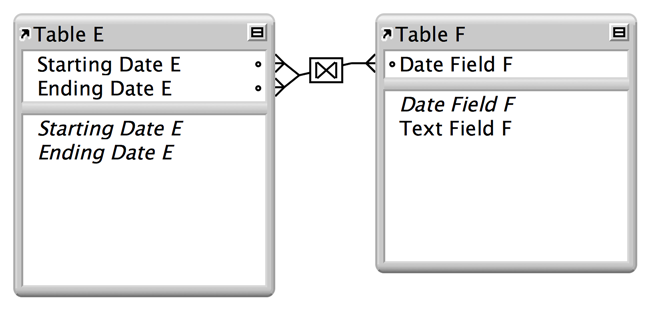
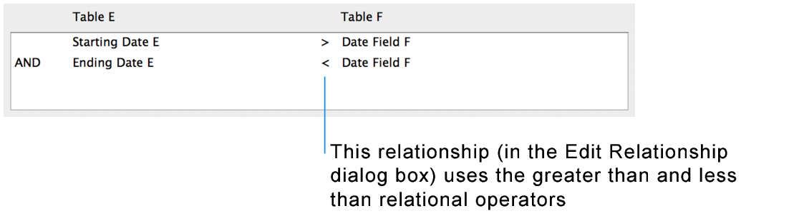

Home > Designing and creating databases > Working with related tables and files > About the types of relationships > About relationships that return a range of records
About relationships that return a range of records A relationship that returns a range of records is similar to a multi-criteria relationship, except that you use comparative operators to find records that are greater than one of your criteria and less than your other criteria. This type of relationship is commonly used to return records that fall between a range of dates or serial numbers. For example, from within TableE you would like to view all the records in TableF that have DateFieldF values that are greater than StartingDateE and less than EndingDateE. In the relationships graph, the symbol indicates that different relational operators are being used in this relationship.   This relationship returns records from TableF that have a DateFieldF value that is later than StartingDateE and earlier than EndingDateE. For example, when the StartingDateE value is 11/01/2014 and the EndingDateE value is 12/01/2014, the relationship returns the following related records from TableF. Records from TableF: Returns 11/14/2014 blue 11/27/2014 green When the StartingDateE value is 12/01/2014 and the EndingDateE value is 01/01/2015, the relationship returns the following related records. Records from TableF: Returns 12/02/2014 red 12/15/2014 yellow 12/17/2014 orange 12/26/2014 brown Related topics About single-criteria relationships About multi-criteria relationships About relationships using comparative operators About self-joining relationships